--------点击蓝字关注我--------
--------点击蓝字关注我--------
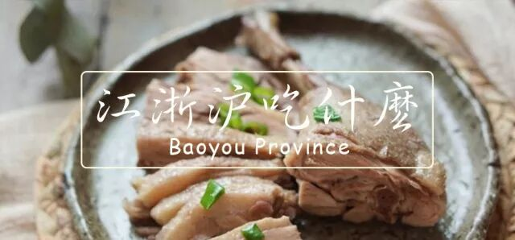
在湾区也待了有三年多了，出去下馆子吃的最多的还是江浙沪风格的餐馆了。
这个风格的餐馆在湾区有名的有不下10家，每一家都有不同的特长和短板。吃货小分队的介绍虽然很全，但是人家毕竟是要恰饭的，不好听的话肯定是不能说的。
我反正不靠这个恰饭，就大胆地胡说一下吧。不过这个仅仅是我个人的意见，仅供参考，吃了不好吃别来找我算账。
第一梯队
这个梯队的餐厅属于我每隔一段时间就会去一次的那种。要么就是综合实力很强，要么就是有一点特别突出，总之就是强烈推荐。
1.阿拉上海：I-Shanghai Delight（Fremont， San Ramon店）：
我觉得阿拉上海在上海菜这个领域的综合实力绝对是最强的，记得似乎吃货小分队上海菜榜单第一吧？
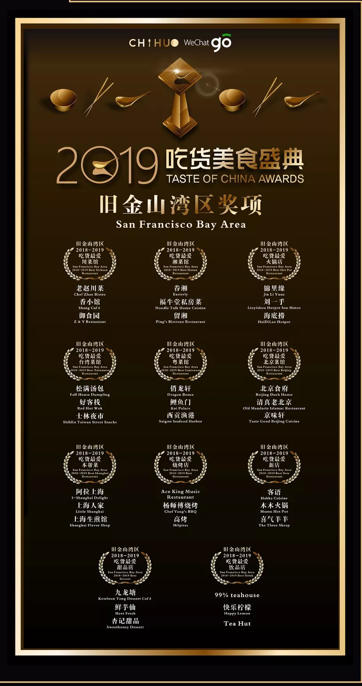
首先他们家的菜品非常多，有几个整个湾区独此一家的东西，比如雪菜豆瓣酥，油墩子之类的东西（其实也不是真的独此一家，只不过他们家做的最正）。他们家每周也会在Weee！上面卖一些蛮独特的东西，比如蛋饺，蟹壳黄，鲜肉月饼之类的东西。在湾区好吃的鲜肉月饼真的难找，除了他们家的可能就是李一季的可以看一看吧。
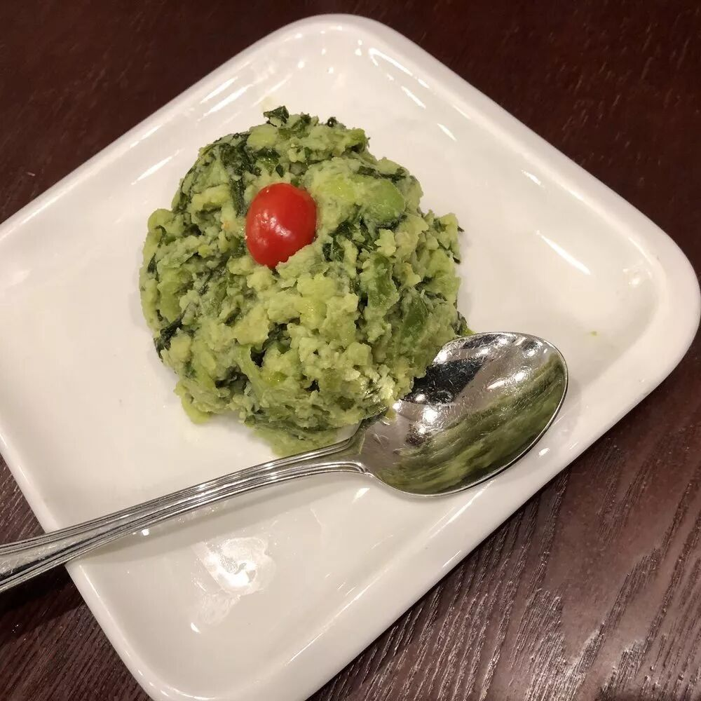
雪菜豆瓣酥
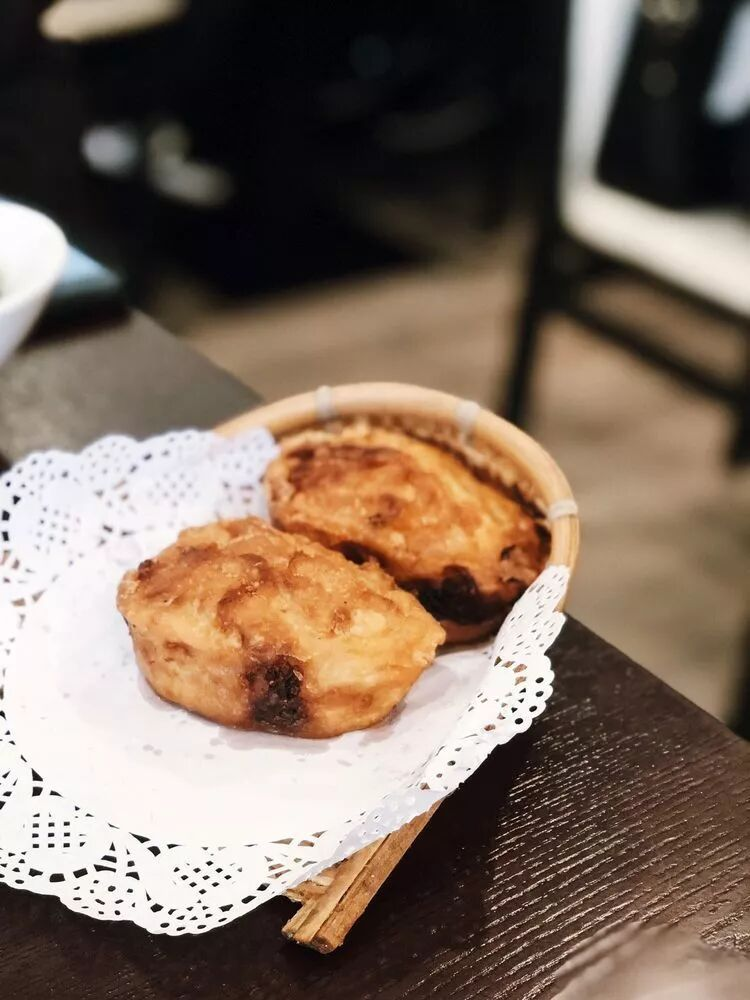
油墩子
其次他们家基本不太有雷，每一样都基本保障正宗和好吃。比如说他们家的小笼做到了小笼应有的皮薄有韧劲，汤多，肉馅新鲜三点。生煎也基本不会出大错，形状和肉馅都对，只不过偶尔煎的那侧会有些偏油。各种辣肉面，咸肉菜饭，糖藕，响油鳝丝什么的也都做得很正。
唯一不好的是排队真的有点久，特别是周六晚上。不过最近他们在San Ramon新开了一家，那边人要少得多，而且菜品的质量基本跟本店一致。
小笼：A
生煎：A-
炒菜：A
面条：A
https://www.yelp.com/biz/shanghai-family-cuisine-milpitas
2.上海屋里香：Shanghai Family Cuisine (Milpitas店)
这一家并不是很出名，但是在我心目中的排名很高，是我们LA来的朋友推荐的（毕竟LA的中餐一直都是可以鄙视湾区的）。他们家的炒菜真的很好吃，像是炒腰花，塔菜炒冬笋，三鲜鱼面筋，青椒牛肉丝，油爆虾之类的菜很有他们家自己的风格。总体来说他们家的口味即使是在上海菜中也属于偏甜。
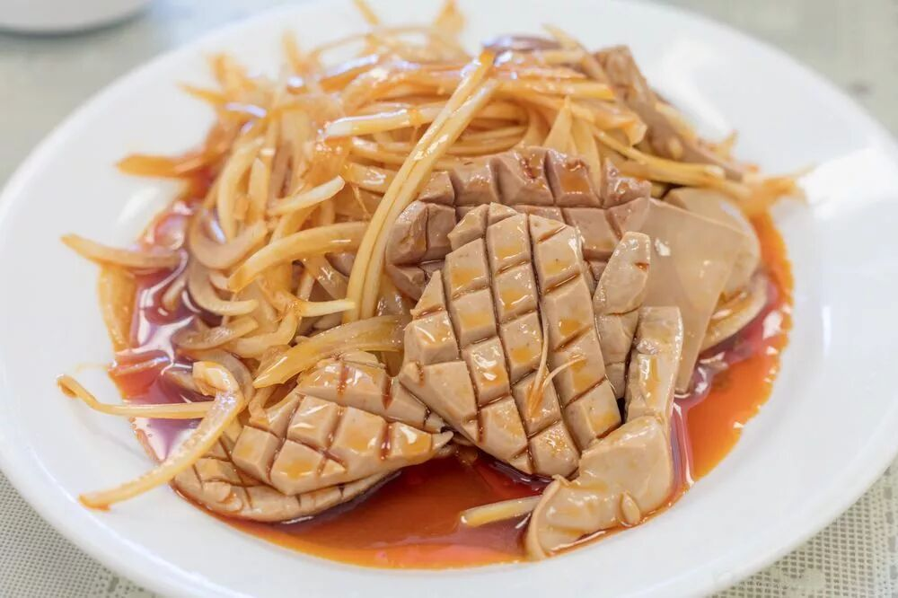
炒腰花
尤其要特别点出的是他们家的腌笃鲜和家常豆腐，似乎在别家没吃到这种做法的。
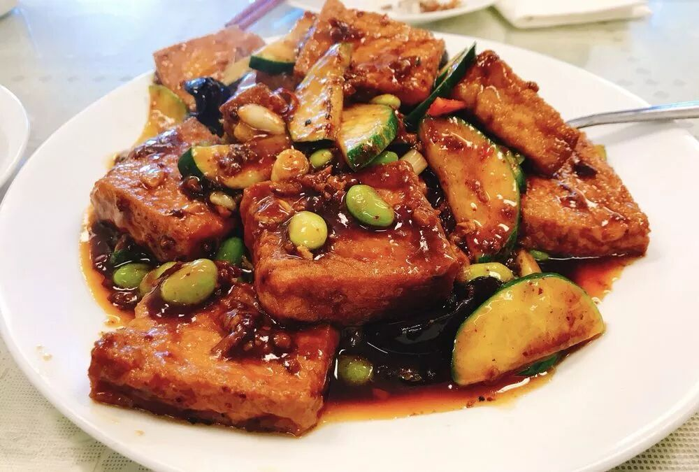
家常豆腐
不过他们家也有短板，小笼和生煎真的不太好吃，小笼感觉像速冻的，生煎也不像是用大铁锅煎的，反而像煎包子。不过春卷真的蛮好吃的，是老板现包的。
注意他们家没有空调，天气热的话只有吹吹电风扇了，而且店里只收现金哦。
小笼：C
生煎：C
炒菜：A+
面条：A-
https://www.yelp.com/biz/shanghai-family-cuisine-milpitas
3.苏味馆：Jiangnan Cuisine （San Francisco店）
这家严格来说是不是上海菜而是苏州菜，不过城里实在没有别的拿得出手的江南菜了= =。
作为第一梯队的成员，他家也是有一些全湾区独此一家的菜品的，比如烂糊肉丝和煎馄饨。他们家的酱鸭属于一绝，别人家的酱鸭一般都是冷盘，他们家的感觉是新鲜烧出来的，鸭肉都是鲜活有弹性的。
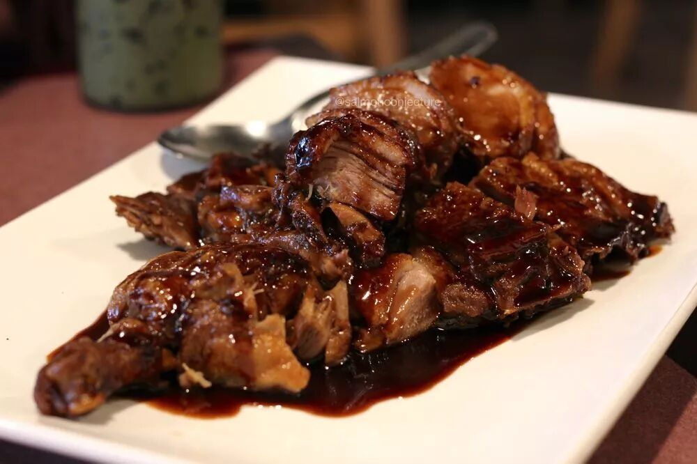
酱鸭
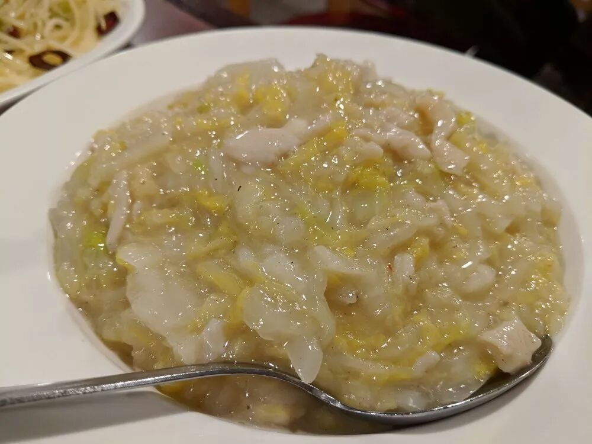
烂糊肉丝，属于看上去不好吃吃起来棒棒哒的典型
除了一些绝活，他们家也是属于炒菜基本没有雷区的。有一段时间我每周末都会去光顾一下，基本把菜单上有点特色的都点完了，基本每个都蛮好吃的。据我所知城里的小伙伴聚餐好多都会约在这里。
当然了因为是苏州无锡的口味，也比较偏甜，点菜的时候注意平衡一下，也点一些解腻的菜。
小笼：无
生煎：无
炒菜：A+
面条：？（来了他家谁还吃面条啊）
https://www.yelp.com/biz/jiangnan-cuisine-san-francisco
4.上海生煎馆：Shanghai Flavor Shop （Sunnyvale店）
这一家似乎开了很久了，店如其名，就是生煎好吃！店面显得有点脏，有点油腻的感觉，不过看在生煎这么正的份上脏不脏就无所谓了（跟国内小杨生煎差不多吧= =，湾区的中餐肯定不能跟国内比的）。
除此以外他们家的菜品就比较少了，印象中葱油拌面蛮有特点的，油豆腐粉丝汤也属于生煎的绝配，基本没有啥炒菜，就有几个凉菜还不错。
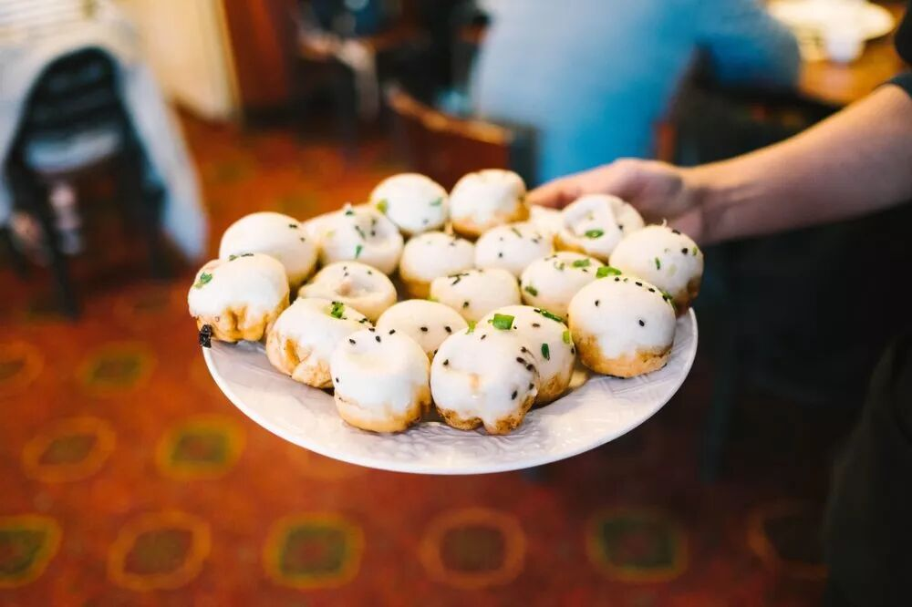
小笼：无
生煎：A+
炒菜：无
面条：A-
https://www.yelp.com/biz/shanghai-flavor-shop-sunnyvale
5.欢喜楼：Chef Wu Chinese Restaurant（Newark店）
这一家就是只能吃早中餐的，晚上就关了= =。
他们家的三合一和煎饼果子特别好吃，咸豆浆也属于做得很出色的那种，除此以外他们的肉臊饭和排骨饭也很不错。反正来吃早点就对了！有一种回国的感觉。
注意他们家只收现金，还有小笼包属于速冻水平，不要点。
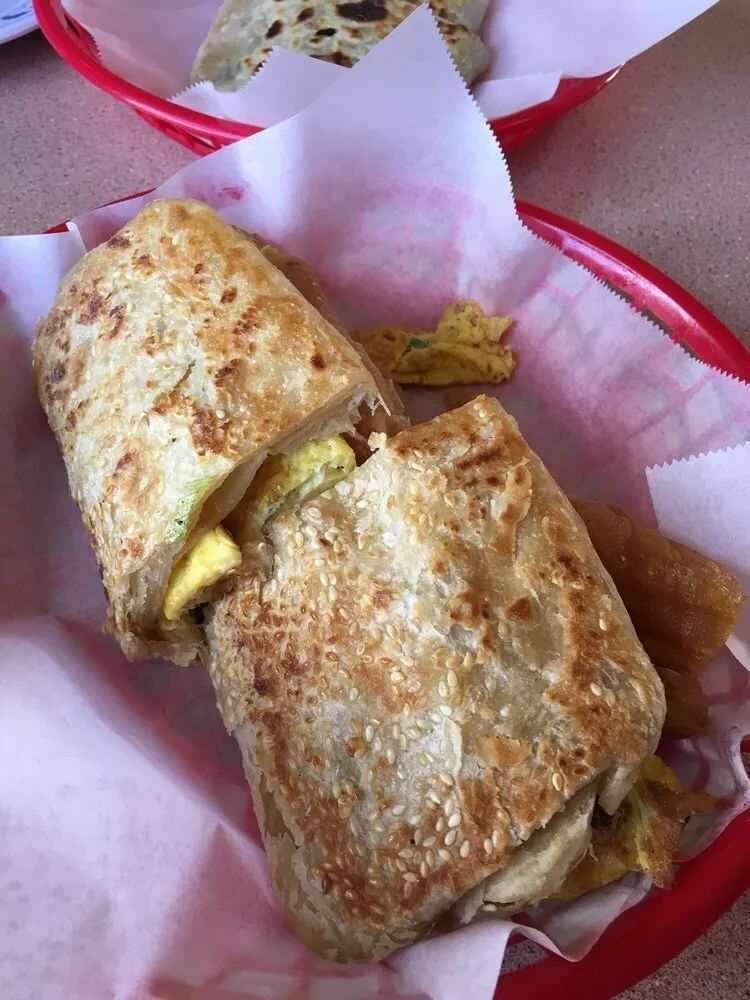
三合一
小笼：C
生煎：无
炒菜：无
面点：无？
早点：A
https://www.yelp.com/biz/chef-wu-chinese-restaurant-newark
6.老弄堂：Old Town Shanghai（Sunnyvale店）
据说是阿拉上海里面的某个师傅自己单飞出来搞的店！
菜品上跟阿拉上海真的很像，不过加入了自己的特色。感觉相对来说阿拉上海更像是餐馆菜的感觉，他们家则更加家常菜。比如说他们的咸肉菜饭的青菜更加大块，糖醋排骨不是冷盘而是现炒出来的。
最推荐的是他们家的双档，里面超级多东西而且汤很鲜。
鉴于还是新店，我也只吃过一次，所以评价偏保守。而且美中不足的是他们家的生煎是属于煎包子水平的，小笼卖完了，没吃到。
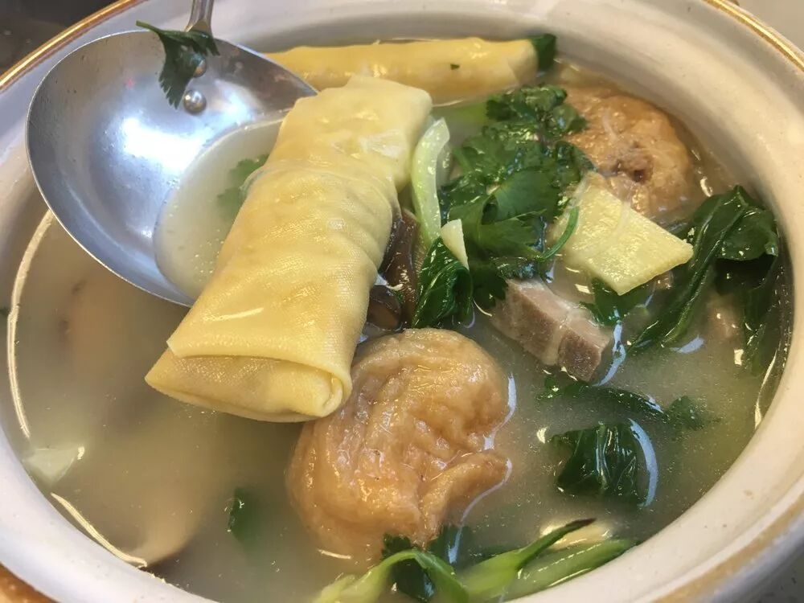
双档
小笼：？
生煎：B-
炒菜：A
面点：？
https://www.yelp.com/biz/old-town-shanghai-sunnyvale?osq=old+town+shanghai
第二梯队
这个梯队的餐厅就是属于某一个方面有些短板，或者每个菜都还行，但是不再有那种眼前一亮的惊喜的餐厅。其中有一些我过去常常去，后来因为某些原因去得越来越少了，可能是我越来越挑剔了吧。。。
7.鼎泰丰：Ding Tai Fung （Santa Clara店）
鼎泰丰作为著名的连锁，不得不承认是蛮好吃的。可惜你当真要排两个小时的队来吃？不知道现在怎么样了。。。我就去吃过两次。印象中小笼包不错，就跟全世界别的地方的鼎泰丰都一样。。。。而且严格来说其实它不能算是上海菜，只不过是有小笼包而已。。。
短板就是排队太久了。。
小笼：A
生煎：无
炒菜：？
面条：A-
https://www.yelp.com/biz/din-tai-fung-santa-clara-5
8.李一季生煎馆：Shanghai Bistro （Newark店）
这一家曾经是我的最爱之一，生煎除了上海生煎馆就是他们家了（阿拉上海排队有点凶）, 而且最关键的是他们家的锅贴是最像上海的那种大铁锅里做出来的锅贴的！
可惜最近去的两次感觉质量明显下滑了。生煎的皮还是原来的样子，煎的也不错，但是里面的肉馅似乎不太新鲜还是怎么的，总觉得有点怪怪的。小笼包也变了，似乎也是肉馅的问题。不知道是不是他们家的做馅的师傅跳槽了还是怎么的。
小笼：B
生煎：B
炒菜：无
面条：A-
https://www.yelp.com/biz/shanghai-bistro-newark
9.上海人家：Little Shanghai （San Mateo店）
除了城里的扛把子苏味馆，离城里最近的江浙菜可能就是这家最好了吧。以前我住在San Mateo这边的时候，如果比较急就会去这边。
他们家总体菜品都还是不错的，不过就是感觉菜里面味精偏多，口味比较重，而且最近几次去吃没感觉到很有亮点。
有一句说一句，他们家菜饭还是做的不错的，不过第一梯队的基本菜饭都做得蛮好吃的就是了。
记得刚从芝加哥来湾区的时候，第一次吃这家馆子，惊为天人，现在真的是越来越挑了。
小笼：B+
生煎：无
炒菜：B+
面条：A-
https://www.yelp.com/biz/little-shanghai-restaurant-san-mateo
10.Chef Zhao Kitchen (Palo Alto店)
如果有朋友想要跟我约在Palo Alto一起吃饭，又不想吃辣的，一般我会提议去吃这家。。。Palo Alto好吃的馆子真的太少了。。。
这一家菜品还不错，可惜就是口味太重了，吃完以后感觉真的有点腻。
他们家的小笼和生煎印象不深，可能也就是速冻和包子级别吧，要是记错了勿喷。
曾经他们家是我找到的唯一一家提供煎馄饨的店！后来他们改了菜谱不做那个了，于是我又少了一个去他们家的理由。
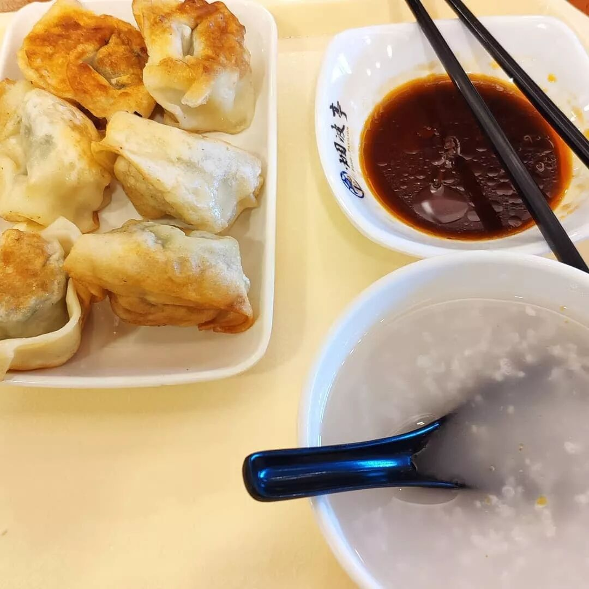
油煎馄饨，现在只有苏味馆有了
小笼：C
生煎：C
炒菜：B+
面条：？
https://www.yelp.com/biz/chef-zhao-kitchen-palo-alto
11.上海乔家栅：Shanghai Restaurant (Cupertino店)
在搬去San Mateo以前我就住在Cupertino，那时候来这边蛮方便的，所以经常来吃一下。
不过后来感觉这家店没有给我很深的印象，所以搬去San Mateo以后就不太常来了。记得他们家有卖手工的青团和粽子，似乎蛮不错的。
为了回想起他们家有啥吃的，我去yelp上翻了一下他们的菜单，发现他们也有雪菜豆瓣酥。除此以外居然还有镇江肴肉！
说实在的他们家菜品还是蛮多的，而且似乎不是很腻，我已经忘记为啥很久不去他家了，可能是因为他们家的广场还有太多别的好吃的，比如杨师傅烧烤。
小笼：B+
生煎：B+
炒菜：A-
面条：？
https://www.yelp.com/biz/shanghai-restaurant-cupertino-2
12.大上海家常菜：Shanghai Garden （Cupertino店）
他们家的旁边就是小刘清粥，刚搬来湾区的时候我就住在这两家店的街对面，走路过个街就能去吃，所以经常去光顾。他们家的赛螃蟹蛮好吃的，就是把蛋清分出来，用沾蟹的酱料炒出来的那个菜。
似乎还是因为比较腻还是什么的，自从搬去San Mateo以后就不常来了，就算来也都是去买小刘清粥，我也不太记得这家店的具体味道了。
小笼：？
生煎：？
炒菜：B+
面条：？
https://www.yelp.com/biz/shanghai-garden-cupertino
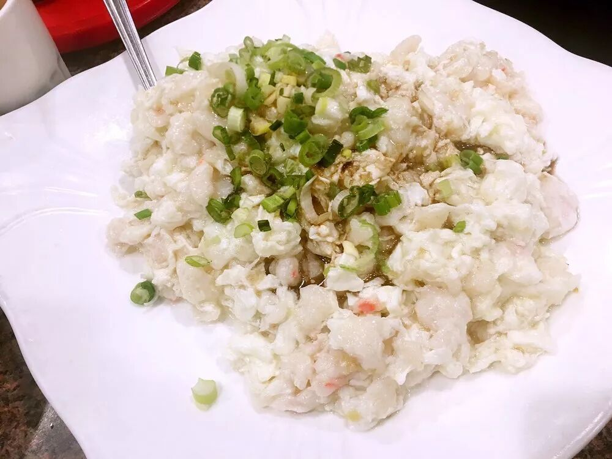
他们家的赛螃蟹
12.上海面馆 shanghai noodle house （Fremont店）
这家的价格比较便宜，不过只收现金。面条还不错，盖浇面蛮好吃的。小笼包和生煎我没有什么印象了，应该不会特别好吃。
小笼：？
生煎：？
炒菜：？
面条：A-
https://www.yelp.com/biz/shanghai-noodle-house-fremont
第三梯队
这一梯队就属于我去过1-2两次以后再也不想去的馆子。
13.上海饭店 bund shanghai restaurant (San Francisco店)
这家就在城里的Chinatown。
来的时候点了小笼包，葱油拌面，某一个菜，还有汤圆。小笼包记得不太好吃，肉馅有点腥。然后葱油拌面的面条很软，一点也不劲道。
汤圆很不错，算是唯一的亮点，是那种别的地方很难吃到的大汤圆，不知道除了上海别的地方有没有。
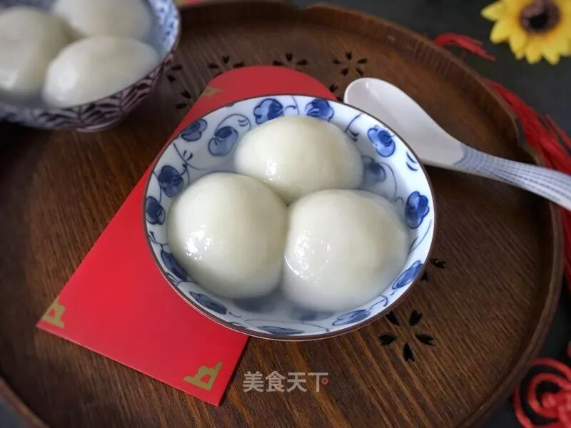
大汤圆有芝麻的和鲜肉的两种，他们家只有芝麻的
因为是在城里，菜价相对来说比较贵。
小笼：C
生煎：无
炒菜：B-
面条：B-
https://www.yelp.com/biz/bund-shanghai-san-francisco
14.一品包饺王 dumpling kitchen (San Francisco)
这是一家很神奇的餐厅，听了好几个朋友说这里的小笼包好吃，于是慕名而来，结果非常失望。小笼包的肉馅里面加了无比多的味精，而且生煎完全就是油炸出来的。。。锅贴也是半圆形的，没有一点汤汁。
可能是希望越大失望越大吧，再也不会来了。
小笼：C
生煎：C
炒菜：？
面条：？
https://www.yelp.com/biz/dumpling-kitchen-san-francisco
15.松满汤包 Full House Dumpling
这也是一家很神奇的餐厅，就开在阿拉上海旁边，生意蛮好的，排了一会儿队才进去，照这个样子应该很好吃！结果汤包难吃到爆炸，你可是一家汤包店哎！有一种上当受骗的感觉。
别的菜不太记得了，主要是反差太强烈了，所以至今都不敢再去尝试。
他们家上了吃货小分队台湾菜的榜单，感觉非常神奇。
小笼：C
生煎：？
炒菜：？
面条：？
https://www.yelp.com/biz/full-house-dumpling-fremont-2
16.饱饺店 shanghai dumpling king （San Francisco店）
这一家我只点过外卖，所以可能去店里会不一样= =。反正由于送来的小笼包和几个菜都不怎么好吃，所以可能以后也不会尝试去店里吃了。
小笼：C
生煎：？
炒菜：B-
面条：？
https://www.yelp.com/biz/shanghai-dumpling-king-san-francisco-3?osq=Shanghai+Dumpling+King）
总结
以上就是我在湾区尝试过的所有江浙菜系的饭店。
本文有非常多的主观意见，而且仅仅基于我个人的试吃结果，因此很有可能某些餐厅只是我去的那一次表现不好，导致我对他们印象不佳。
如果你有不同的意见，欢迎留言讨论~
还有这篇文章要是阅读2000+的话，下一篇我就盘点一下湾区的湖南菜馆。如果希望我再出这个系列文章的话，就帮忙点一下右下角的在看按钮吧~